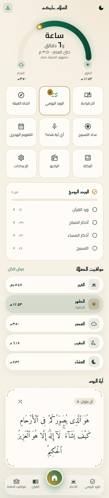
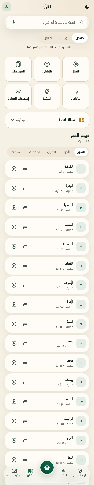
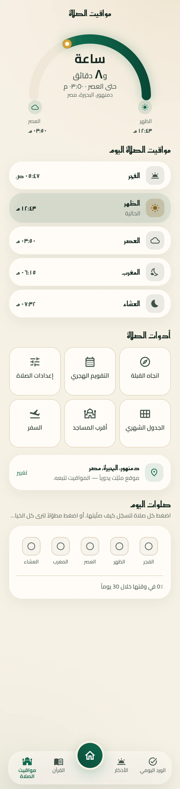
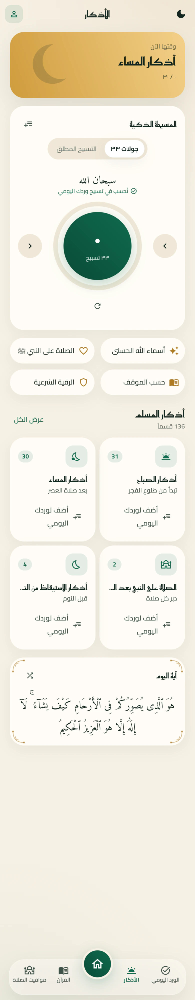
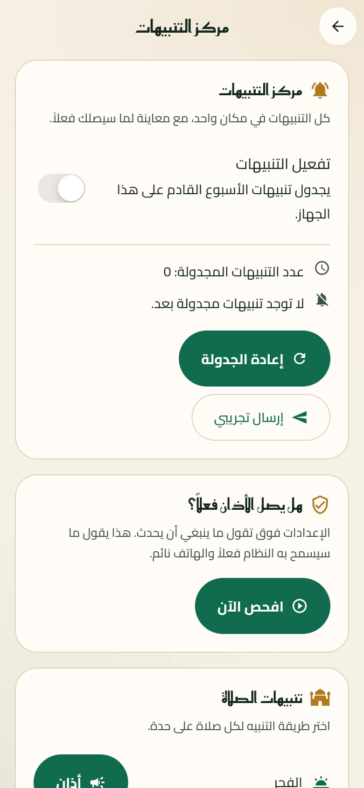

أندرويد
الاختيار الصحيح لأي هاتف من آخر ثماني سنوات تقريباً.
تحميل لأندرويد﴿إِنَّ قُرْآنَ الْفَجْرِ كَانَ مَشْهُودًا﴾الإسراء ٧٨
صلاتك في وقتها، والمصحف كاملاً بالتلاوة والتجويد والحفظ، والأذكار، وورد يومي يتابعك، وأئمة الحرمين كل أسبوع. كل هذا على جهازك.

اضغط على أي بطاقة لترى كل ما فيها، ميزةً ميزة، بشرح بسيط.
الشاشات هنا طويلة كما هي في التطبيق، وتتحرك وحدها حين تقف عليها. على الهاتف: اضغط على الشاشة.
الصلاة القادمة والوقت المتبقي في القوس، واختصارات لكل ما تحتاجه، ثم وردك ومواقيت اليوم وآية اليوم.
ثلاث روايات، وبحث بالصوت أو الكتابة، وفهرس بالسورة والجزء والحزب والصفحة، وأدوات للحفظ والتلاوة.

المواقيت محسوبة على جهازك، وأدوات الصلاة كلها في مكان واحد، وسجلّ يذكّرك كيف صلّيت.

حصن المسلم كاملاً، وأذكار الصباح والمساء في وقتها، والسبحة، والرقية، وأسماء الله الحسنى.

مشغّل كامل بقرّاء متعددين، يكرر لك المقطع للحفظ، ويطفئ نفسه بمؤقت النوم، ويعمل في الخلفية.
التنبيهات مجهّزة على جهازك لأسابيع، ويخبرك التطبيق بصراحة إن كان هاتفك يمنعها، وكيف تصلحه.

لقطات حقيقية من التطبيق نفسه، لا رسوم تشبهه. اضغط على أي صورة لتكبيرها.
الإصدار ١٫٦٫٤. الروابط تشير دائماً إلى آخر إصدار.
الاختيار الصحيح لأي هاتف من آخر ثماني سنوات تقريباً.
تحميل لأندرويدإن لم تتثبّت النسخة الأولى على هاتفك، فهذه له.
تحميل النسخة ٣٢ بتليس على متجر آبل بعد، فيُثبَّت بأداة مثل Sideloadly أو AltStore أو TrollStore.
تحميل لآيفونالملفات مبنية آلياً من الشيفرة المصدرية على GitHub Actions، ومنشورة في صفحة الإصدارات.
راسلني مباشرة، أو افتح بلاغاً على GitHub.